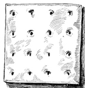
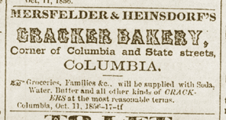
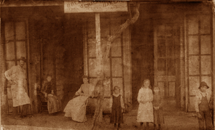
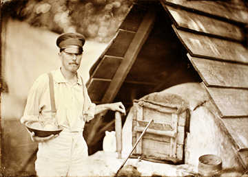

BAKERS of COLUMBIA.
(Vacant lot history.)
1850 to 1900

© FDPØ
Hard Tack, Pilot Bread, Ship Biscuit - 1800s.

This is a list of known Bakers in Columbia.
(Most of these locations are empty lots.)

1856 August - Gilbert Beach moves a bakery into the building that is to the east of the Fallon House on Washington Street.
1856 Broadway Termperance House & Bakery. So the ad reads in the Miners & Business Men's Directory. On Washington Street, fronting Broadway.
1856 The Boston Bakery is on Washington street a few buildings north east.
1856 Mersfelder & Heinsdorf's Cracker Bakery in on the corner of Columbia & State streets. Open for Families &c., supplying Soda Water, Butter and all kinds of CRACKERS at the most reasonable terms.

1856 United States Bakery. So the ad reads in the Miners & Business Men's Directory. On Main Street. A two story brick building is (still) on the lot. A bakery and confectionery store is on the first floor with lodgings on the second. An ice cream parlor was added to the bakery with several marble topped tables. (see adition ad)
1859 Antone Seibert has a Bakery and Coffee Saloon (just south of present day Franco barn) on Main Street.
1859 In the Alberding building corner of Jackson and Main Streets, Susanbeth and Day advertise as agents for a bakery as well as running an oyster and coffee saloon in the building. On the first floor is a bakery and in the basement is Rehm's Oyster Bar & Coffee Shop. (St. Charles)
1860 July 18 - John Elder age 23 (born in Scotland) is listed in the census (page 163) as a Baker worth $300. His wife Jane is 20 from Scotland.
1863 Campbell's Bread Bakery. So the ad reads in Columbia newspaper. On Broadway between State & Fulton. P.A. Campbell also advertises his Cracker Bakery.
1864 December - Charles Joseph sells lot (Angelo's) to P A. Campbell for $205. He moves his bakery into the building. A little later he purchases a lot and frame building east of his lot, forming lot 14.
1864 Bayhaut loses the Knapp building in a foreclosure.
1865 June - Antone Siebert rents the building for a bakery, having lost his building in the fire.
1866 Siebert buys the building. He continues the business until 1904. For a while, his brother William is a partner. The bakery was well known for its graham crackers. His bakery was called the "Boss Bakery" then became the "Columbia Cracker Bakery".
1880 Columbia's Cracker and Bread Bakery. So the ad reads in Columbia newspaper. Antone Siebert has on hand "Soda, Graham, Wine & Boston Crackers, Pilot & Ship Bread, Jenny Lind Cakes and Ginger Snaps, Wedding cakes made to order, Pies and Cakes, &c., &c. Patronise your home Cracker Bakery."

